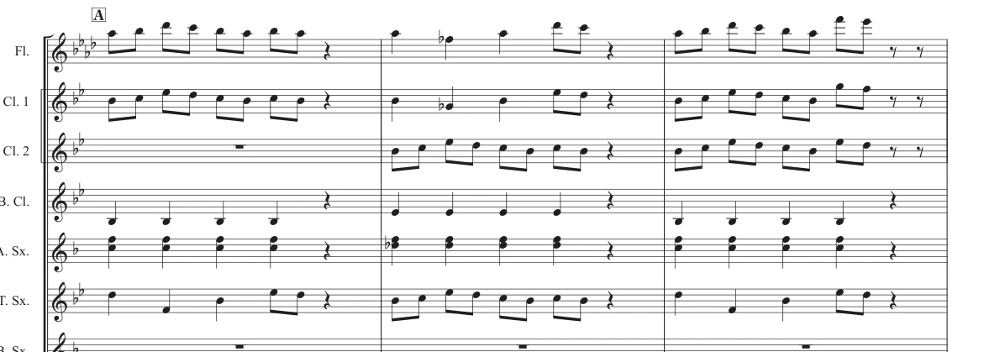
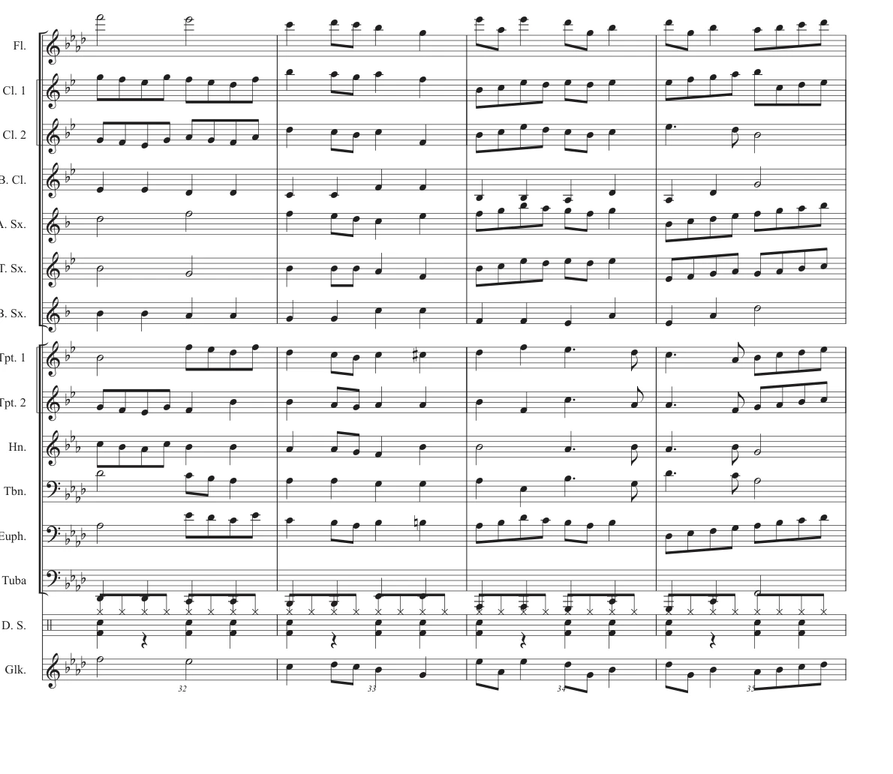

WORKS / WIND BAND / 2025
ふたしか
作曲 束元康介吹奏楽作品約2分40秒
01 / LISTEN
音源を聴く
ふたしか
DEMO · 2:40
デモ音源を全曲再生できます。実際の合奏録音ではありません。
02 / ABOUT
作品について
COMPOSER束元康介
GENRE吹奏楽
YEAR2025
DURATION約2分40秒
PERFORMANCE2025年 学習発表会
03 / SCORE PREVIEW
楽譜を少し見る


画像を選ぶと大きく表示されます。楽譜は一部のみ掲載し、総譜・パート譜のダウンロードは設けていません。